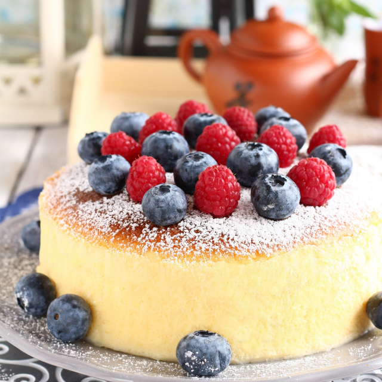
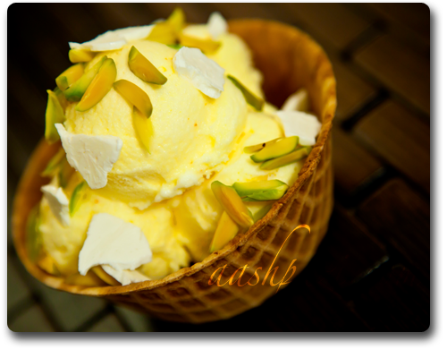

Welcome to the world of dessert. Dessert festivals may honour a specific ingredient, a single dish, or a whole culinary civilization. It's a festival where you may indulge on desserts from all around the world and enjoy a memorable time with family and friends.On January 26th 2023 from 10am to 10:30pm in Palace Grounds.
Address:Palace Grounds Inner RdJayamahal, Bengaluru, Karnataka 560006.
Gulab Jamun,India
Gulab jamun is a lush, syrupy distillation of milky flavor, these deep-fried Indian treats are anything but a simple doughnut.Gulab jamun is a sweet confectionary or dessert, originating in the Indian subcontinent and a type of mithai popular in India, Pakistan, Nepal, the Maldives (where it is known as gulab ki janu), and Bangladesh, as well as Myanmar.
Alfajores, South America
An alfajor or alajú is a traditional confection typically made of flour, honey, and nuts.The crumbly bite of shortbread gives way to a sweet layer of dulce de leche, a caramel-like candy made by gently cooking sweetened milk until it turns into a rich, mellow treat. It is found in Paraguay, Argentina, the Philippines, Southern Brazil, Southern France, Spain, Uruguay, Peru and Chile.
Baklava, Turkey
Baklava is a layered pastry dessert made of filo pastry, filled with chopped nuts, and sweetened with syrup or honey. This is just the most famous of the Ottoman Empire's syrup-soaked pastries, but it's snagged the limelight for good reason. With a simple list of ingredients and endless variations, it easily ranks among the world's most tempting treats.
Black Forest Cake, Germany
Black Forest gâteau or Black Forest cake is a chocolate sponge cake with a rich cherry filling based on the German dessert Schwarzwälder Kirschtorte, literally "Black Forest Cherry-torte". Typically, Black Forest gateau consists of several layers of chocolate sponge cake sandwiched with whipped cream and cherries.
Brownies, United States
A chocolate brownie or simply a brownie is a chocolate baked confection. Brownies come in a variety of forms and may be either fudgy or cakey, depending on their density. Brownies often, but not always, have a glossy "skin" on their upper crust.
Chocolate Mousse, France
An airy confection made with just a handful of ingredients, chocolate mousse is a delicious paradox: the richer it is, the lighter it seems. Gallic chefs have been whipping up chocolate mousse -- the word means "foam" in French -- for at least a few hundred years, but the quest for foamy chocolate is much older.
Dan Tats, Hong Kong
Follow the wafting scent of egg custard into a Hong Kong bakery to sample one of the territory's most iconic treats. Perfectly sized for eating out-of-hand, dan tats are best enjoyed fresh from the oven, when the warm custard meets a perfectly crisp crust. And with a map-spanning backstory, dan tats are among the tastiest symbols of globalization.
Gelato, Italy
Gelato is the common word in Italian for all kinds of ice cream. In English, it specifically refers to a frozen dessert of Italian origin.Artisanal gelato in Italy generally contains 6%–9% butterfat, which is lower than other styles of frozen dessert.

Japanese Cheesecake
Japanese cheesecake, also known as soufflé-style cheesecake, cotton cheesecake, or light cheesecake, is a variety of cheesecake that is usually lighter in texture and less sweet than North American-style cheesecakes.
Knafeh, Levant
Knafeh is a traditional Middle Eastern dessert made with spun pastry called kataifi, soaked in a sweet, sugar-based syrup called attar, and typically layered with cheese, or with other ingredients such as clotted cream, pistachio or nuts, depending on the region. It is popular in the Middle East.
Kulfi, India
Kulfi is a frozen dairy dessert originating in the Indian subcontinent during the Mughal era in the 16th century. It is often described as "traditional Indian ice cream". Kulfi is a traditional sweet of the Indian subcontinent, where it is commonly sold by street vendors called kulfiwallahs.

Saffron Ice Cream, Iran
cented with saffron, rosewater and pistachios, it's no wonder that this Iranian ice cream is a favorite at Nowruz, the Persian New Year.From a lightly golden color to its distinctive aroma, the creamy treat is the essence of spring. Saffron ice cream, or bastani, is a memorable experience on its own, and its flavor alone easily snags a spot among the world's greatest frozen desserts.
Tiramisú, Italy
Tiramisu is a coffee-flavoured Italian dessert. It is made of ladyfingers dipped in coffee, layered with a whipped mixture of eggs, sugar, and mascarpone cheese, flavoured with cocoa. The recipe has been adapted into many varieties of cakes and other desserts.
Sticky Rice with Mango, Thailand
Mango sticky rice is a traditional Southeast Asian and South Asian dessert made with glutinous rice, fresh mango and coconut milk, and eaten with a spoon or the hands.This traditional sweet begins with the glutinous rice that's grown in paddies across Southeast Asia, and the starchy grains combine with rich coconut milk and palm sugar for a treat that retains a chewy bite even when it's perfectly soft.
Sesame Balls, Jian Dui, China
Jiandui is a type of fried Chinese pastry made from glutinous rice flour. The pastry is coated with sesame seeds on the outside and is crisp and chewy. Inside the pastry is a large hollow, caused by the expansion of the dough.
Rigó Jancsi, Hungary
Rigó Jancsi is a traditional Hungarian cube-shaped chocolate sponge cake and chocolate cream pastry. It gained popularity in the former Austria-Hungary and is named after Rigó Jancsi, a famous Hungarian Gypsy violinist.
Medovik, Russia
Medovik is a layer cake popular in countries of the former Soviet Union. The identifying ingredients are honey and smetana or condensed milk. It is a dessert which is known for its lengthy preparation time.
Pumpkin Pie,United States,United Kingdom
Pumpkin pie is a dessert pie with a spiced, pumpkin-based custard filling. The pumpkin and pumpkin pie are both a symbol of harvest time, and pumpkin pie is generally eaten during the fall and early winter.
Gajar ka halwa
Gajar ka halwa, also known as gajorer halua, gajrela, gajar pak, and carrot halwa is a carrot-based sweet dessert pudding made by placing grated carrots in a pot containing a specific amount of water, milk and sugar, cardamom and then cooking while stirring regularly.
Contacts
For further information on the event, please call or email.